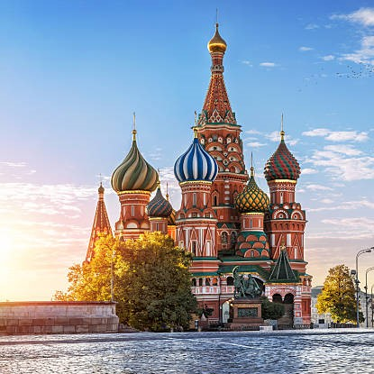
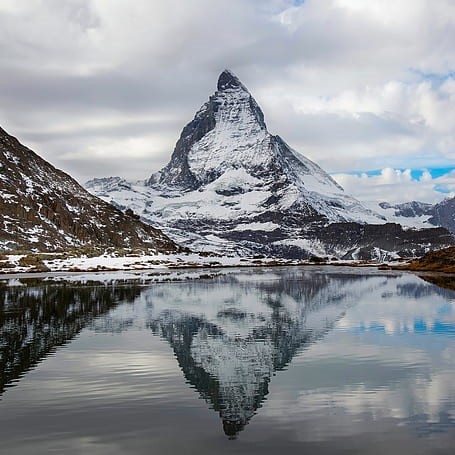
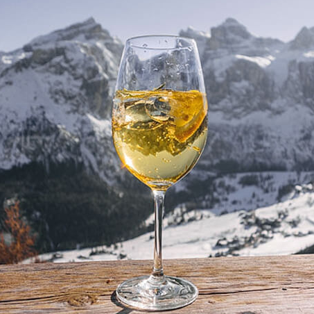
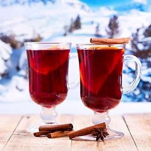
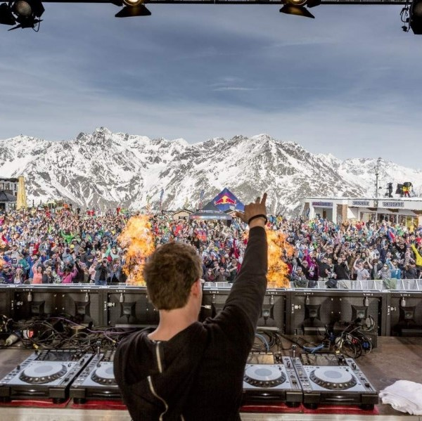

SVETLANA'S BREATHTAKING PROFILE

Hello everyone and welcome to my profile. I am a 23 year old Russian. Having seen in total over 80 countries, hospitality is a clear career path for me. I enjoy skiing, spending time with frieds and foremost vineyard walks followed by wine degustations.
This is my first website creation, so please be amazed and stay tuned for more updates.
About MeTRAVELLING
Funfact, I have already made the tour around the world. Ultimate dream would be to make a second one with one limitation : not to choose countries where I have previously been.
3 PLACES I HAVE LIVED IN
 SKIING 🎿
Some may call my style a grandma style, because it is slow and very fidgety. However, I prefer to name it universal freestyle, because my speed remains consistent no matter how many raclletes and vin chauds I took on the slopes.
3 BEST VIN CHAUDS ON THE SLOPES
  WALKING
Random hobby acquired during lockdown is long walks with friends or with music. Thanks to one and only Alain Berset, we could easily go wherever we wanted to without justifying ourselves to authorities.